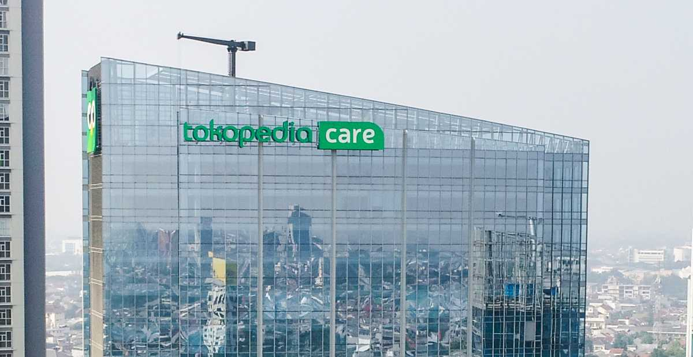

Sambut Hari Pelanggan Nasional 2023, Intip Inovasi
Customer Experience di Tokopedia Care
06 Oct 2023

Yogyakarta, 31 Agustus 2023 - Di era experience economy, konsumen tidak lagi hanya menginginkan
barang atau jasa, tetapi juga pengalaman mengesankan. Memaksimalkan nilai tambah pada pengalaman
pelanggan (customer experience) menjadi hal yang sangat penting.
“Tokopedia sebagai perusahaan teknologi Indonesia berupaya memberikan pengalaman terbaik bagi
pelanggan lewat Tokopedia Care-pusat layanan pelanggan yang 100% berbasis digital dan tersedia 24/7
melalui berbagai kanal-sehingga pertanyaan pelanggan dapat dijawab secara cepat, tepat dan
transparan,” ungkap Senior Vice President of Sales, Operations, and Product Tokopedia, Rudy
Dalimunthe.
Rudy menambahkan, “Tokopedia Care menggabungkan tiga elemen dalam memberikan customer experience
terbaik, yaitu (1) human touch lewat tim Customer First Squad atau CFS, (2) teknologi dan (3) voice
of customer dengan mempertimbangkan umpan balik dari pelanggan.”
Daftar inovasi customer experience di Tokopedia Care
Tokopedia sekarang sudah bisa diakses oleh masyarakat di 99% kecamatan di Indonesia. Pelanggan
Tokopedia pun mencakup pembeli maupun penjual. Maka untuk terus menghadirkan pengalaman terbaik bagi
pelanggan, ribuan Nakama di Tokopedia termasuk CFS menciptakan berbagai inovasi di ranah customer
experience.
“Misalnya lewat manajemen service-based dimana jalur penanganan pertanyaan pelanggan kini
disesuaikan berdasarkan topik sehingga solusi yang ditawarkan Tokopedia Care bisa lebih akurat serta
personalisasi customer experience yang memberikan pengalaman yang lebih sesuai dengan kebutuhan
masing-masing pelanggan,” jelas Rudy.
Rudy menambahkan, “Tokopedia Care juga berinvestasi di artificial intelligence (AI) dan automasi
guna meningkatkan kualitas dan efisiensi customer experience melalui automasi dan TANYA (asisten
virtual Tokopedia Care), serta mengembangkan real-time customer engagement hub yang merupakan sistem
untuk memantau aktivitas internal dan sentimen eksternal (contohnya di media sosial) secara
real-time.”
Selain mengakomodasi pembeli, Tokopedia juga merupakan rumah bagi lebih dari 14 juta penjual dan
hampir 100% pelaku UMKM lokal, yang notabene penyokong lebih dari 60% PDB nasional. Hal ini
mendorong Tokopedia-melalui Tokopedia Care-senantiasa memberikan nilai tambah bagi penjual demi
sekaligus membantu tumbuh kembang mereka.
Caranya dengan menghadirkan high-end service experience, yang mencakup (1) interaksi dalam aplikasi
yaitu kurasi artikel bantuan yang dirancang khusus untuk penjual, (2) low-touch communication yang
merupakan sistem customer experience berbasis digital dan (3) high-touch communication yaitu
komunikasi lewat Relationship Manager (RM) dan CFS.
Berbagai pelaku bisnis di Indonesia, dari beragam skala dan kategori, telah merasakan manfaat dari
Tokopedia Marketing Solutions. Misalnya sebuah brand fesyen berhasil mendapatkan peningkatan sebesar
103% pada rata-rata jumlah pesanan.
“Berkat sederet inovasi yang telah kami lakukan, Tokopedia Care berhasil memberikan solusi bagi
pelanggan dengan makin cepat, tepat dan efisien. Produktivitas CFS juga makin meningkat. Hal ini
bisa sekaligus mendukung misi besar Tokopedia dalam menciptakan pemerataan ekonomi secara digital di
Indonesia,” tutup Rudy.
Selain Tokopedia Care, Tokopedia juga menghadirkan inisiatif Hyperlocal Tokopedia agar pelaku usaha
di seluruh wilayah di Indonesia punya kesempatan yang sama untuk menciptakan peluang bisnis lewat
pemanfaatan teknologi. Hal ini sejalan dengan salah satu komitmen ESG GoTo Tiga Nol (Three Zeroes),
yaitu Nol Hambatan (Zero Barriers), yang bertujuan untuk membantu pelaku usaha menciptakan peluang
tanpa hambatan lewat ekosistem GoTo termasuk Tokopedia.
Hyperlocal Tokopedia menerapkan teknologi geo-tagging dan bertujuan mendekatkan penjual dan pembeli
di mana pun mereka berada. Hyperlocal Tokopedia punya berbagai manifestasi, seperti Kumpulan Toko
Pilihan (KTP) dan Dilayani Tokopedia.
Hyperlocal Tokopedia telah membawa dampak ekonomi yang positif. Rerata persentase pertumbuhan
ekonomi di kota dengan Hyperlocal Tokopedia angkanya lebih tinggi yaitu 2,78%, dibandingkan di kota
tanpa Hyperlocal Tokopedia yang tercatat 1,26%.